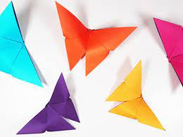
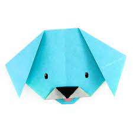
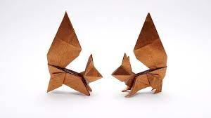
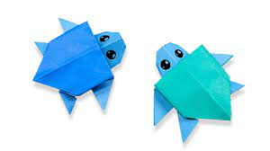

Origami Designs
About us
Follow us

Interesting facts:
- Butterflies taste with their feet!
- Their wings are transparent!
- They never eat anything solid. They have an "All-liquid" Diet!

Interesting facts:
- Dogs have such good noses, that they can sniff out medical problems
- Dogs don't sweat!
- Humans are either right-handed or left-handed, and dogs are right-pawed or left-pawed.
Cute, isn't it?

Interesting facts:
- A squirrel's front teeth never stop growing
- A new-born squirrel is about an inch long
- Squrrels can leap 10 times their body length

Interesting facts:
- Turtles belong to one of the oldest reptile groups, dating upto 200 million years back(the time of
dinosaurs!)
- Turtles can never come outside their shells
- Turtles are very fond of eating jellyfish. Sometimes they mistake a poly bag for a jelly
fish and eat them up!